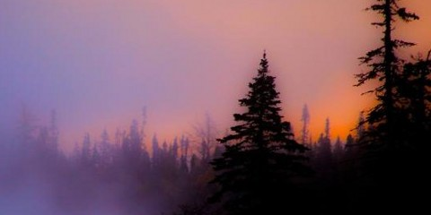
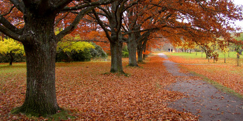
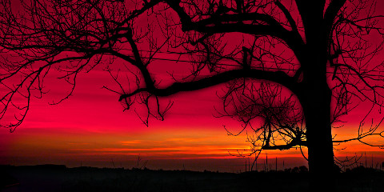
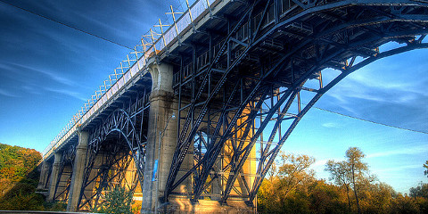
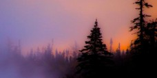
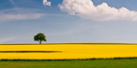
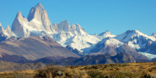
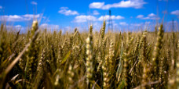

Slice Slides Example One image slide ... retour du Nord ...!!!  ... back from the North ...!!! rapeseed and the tree Yellow field Falltime in the park  Fall in the park Hirosaki castle in Japan Built in 1611 by Tsugaru family. Destroyed in 1627, rebuilt in 1810. Margaritas Margaritas under the Sun. Red sunset  Tree form at red sunset Bridge  Bridge near Toronto Mount Fitz Roy El Chalten - Santa Cruz - Argentina Petal Petal detail Weath field Weath field landscape Two images slide ... retour du Nord ...!!!  ... back from the North ...!!! rapeseed and the tree  Yellow field Falltime in the park Fall in the park Hirosaki castle in Japan Built in 1611 by Tsugaru family. Destroyed in 1627, rebuilt in 1810. Margaritas Margaritas under the Sun. Red sunset Tree form at red sunset Bridge Bridge near Toronto Mount Fitz Roy  El Chalten - Santa Cruz - Argentina Petal Petal detail Weath field  Weath field landscape Thumbnails in controls ... retour du Nord ...!!! ... back from the North ...!!! rapeseed and the tree Yellow field Falltime in the park Fall in the park Hirosaki castle in Japan Built in 1611 by Tsugaru family. Destroyed in 1627, rebuilt in 1810. Margaritas Margaritas under the Sun. Red sunset Tree form at red sunset Bridge Bridge near Toronto Mount Fitz Roy El Chalten - Santa Cruz - Argentina Petal Petal detail Weath field Weath field landscape